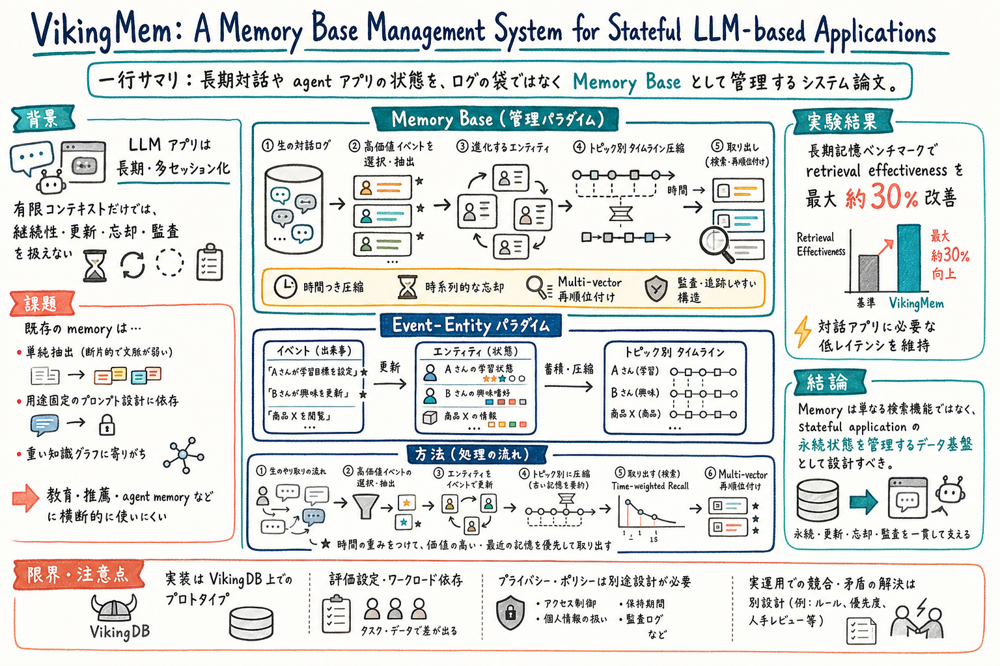

長期 memory を、検索、圧縮、更新、忘却、転用の一体問題として扱う。

どんな論文か
VikingMem の問題意識は、LLM アプリケーションが短い一問一答から、長期・多セッション・状態持ちのサービスへ移っていることにある。コンテキストウィンドウが伸びても、永続状態、更新、忘却、監査、低レイテンシをすべてプロンプト側で扱うのは難しい。
既存の memory 実装は、raw session を保存するだけ、単純に抽出して vector store に入れるだけ、特定用途のプロンプトに固定するだけ、あるいは重い knowledge graph を作る方向に寄りやすい。論文は、これらが教育、推薦、agent memory などを横断する汎用基盤になりにくいと見る。
そこで論文は Memory Base というデータ管理パラダイムを提案する。memory を検索補助ではなく、長期相互作用から選択抽出され、状態として進化し、時間に応じて圧縮・減衰し、多様なアプリへ転用できる persistent state として扱う。
VikingMem はこの考え方を VikingDB 上に実装した end-to-end system である。中心は event と entity で、event は interaction stream から抽出され、entity は event によって更新される。古い event は topic-wise timeline で高次の summary memory へ圧縮され、取り出し時には time-weighted recall と multi-vector reranking を使う。
評価では長期記憶ベンチマークで retrieval effectiveness を最大約30%改善し、対話アプリに必要な低レイテンシを維持すると報告する。ただし、実装基盤、ワークロード、privacy / policy、衝突解決は運用側で別途見る必要がある。
VikingMem は、stateful LLM-based applications のための Memory Base Management System である。中心の主張は、memory をコンテキスト外部の検索部品としてではなく、アプリケーションの永続状態を管理するデータ基盤として設計すべきだというもの。
論文は Memory Base を、raw information stream から高価値な memory を選択抽出し、時間とともに状態を更新し、古い情報を圧縮しながら、複数用途へ転用できる abstraction として定義する。
VikingMem はこの Memory Base を、event と entity の抽象で具体化する。event は発生した出来事、entity は人・対象・状態を表す。event が entity を更新することで、過去ログの袋ではなく、現在に効く状態表現を作る。
課題と貢献
複雑な interaction stream から event を抽出し、event が entity の状態を更新することで、stateful な memory を作る。
第三の貢献は、topic-wise timeline と temporal compression である。古い記憶をそのまま残し続けるのではなく、話題ごとの時系列に沿って高次 summary へ圧縮し、最近の情報を優先する。
第四の貢献は、retrieval 側の multi-vector reranking と time-weighted recall である。単純な semantic similarity だけではなく、時間や複数表現を使って取り出しを調整する。
retrieval effectiveness と interactive latency を同時に見ることで、研究用の精度だけではなくアプリ実装上の制約も扱う。
手法のしくみ
1
入力は長期の interaction stream である。すべてをそのまま保存するのではなく、memory extract により高価値な event を選択的に取り出す。
2
抽出された event は entity と結びつく。entity は user、item、task、preference、agent state など、アプリケーションにとって状態として保持したい対象を表す。
3
event が蓄積すると、entity memory は更新される。これにより、古い事実を単に並べるのではなく、現在の状態に近い表現へ進化させる。
4
memory management では、topic-wise timeline を使って記憶を時間軸で整理する。古い情報は高次 summary へ圧縮され、重要度や新しさに応じて残り方が変わる。
5
retrieval では、query に対して関連 event や entity を取り出す。time-weighted recall で新しい情報を優先しつつ、multi-vector reranking で複数の表現から候補を並べ替える。
6
全体として、extract、manage、retrieve の3層が、Memory Base Management System として統合される。
検証結果
論文は、長期記憶ベンチマークで VikingMem が既存 baseline を上回り、memory retrieval effectiveness を最大約30%改善すると報告する。
評価では、単に精度だけでなく interactive applications に必要な低レイテンシも重視される。長期 memory は正確でも遅すぎると、実サービスでは使いづらいからである。
one-pass extraction、entity update、reranking、segmentation、keyword graph などの ablation を通じて、各部品が retrieval quality と efficiency にどう効くかを切り分けている。
storage efficiency と retention analysis では、古い memory を残し続けるだけではなく、圧縮と減衰を通じて保持コストを管理する方向が示される。
限界と読みどころ
VikingMem は VikingDB vector engine 上の実装であり、別の storage / retrieval stack に移した時に同じ latency や効率が出るとは限らない。
Memory Base の抽象は強いが、privacy、audit policy、ユーザー同意、消去要求などは実運用側で明示的に設計する必要がある。
event extraction と entity update は、抽出モデルや schema 設計に依存する。誤抽出や古い entity 状態の衝突をどう扱うかは、運用設計の重要論点になる。
評価ベンチマークは memory retrieval を中心にしている。実際の agent 行動、長期タスク成功率、ユーザー信頼、誤った記憶更新の被害までは追加検証が必要である。
読みながら見る図表や節
- Memory Base の図は、raw logs から event を抽出し、entity を更新し、timeline で圧縮し、必要時に retrieval する流れとして読むとよい。
- Event-Entity paradigm は、event が entity state を変える関係として見る。ログを保存するのではなく、状態遷移を管理する図として読むと分かりやすい。
- system design の図は、extract、manage、retrieve の3層に分ける。どこが書き込み時処理で、どこが読み出し時処理かを分けると実装に引きやすい。
- 評価表は、retrieval effectiveness だけでなく latency、storage、ablation を一緒に見る。memory system は高精度だけではなく、運用可能な軽さが主張の一部である。
次に読むなら
- StructMem と並べると、出来事の構造化と timeline compression の違いが見える。StructMem は会話記憶の構造、VikingMem はアプリ基盤寄りで読むとよい。
- STALE と並べると、古い memory が現在も有効かをどう判定するかが次の論点になる。VikingMem の temporal weighting だけで stale state 問題が解けるわけではない。
- MemCog と並べると、保存基盤と推論時 navigation の役割分担が見える。Memory Base を作ったあと、agent がいつ能動的に memory を探索するかが別の設計になる。
- おい丸運用に引くなら、daily logs を event、ユーザーやプロジェクトを entity、週次整理を timeline compression、質問時探索を retrieval として切り分けてみるとよい。
読後Q&A
この論文の中心問いは？
長期的に動く LLM アプリケーションの記憶を、単なる検索補助ではなく、永続状態を管理するデータ基盤としてどう設計するかである。
Memory Base とは何？
長期 interaction stream から価値の高い記憶を抽出し、状態として更新し、時間に沿って圧縮・減衰し、複数用途に使える形で管理する memory のデータ基盤である。
VikingMem は何を提案している？
Memory Base を VikingDB 上に実装した end-to-end system で、event extraction、entity update、timeline compression、time-weighted recall、multi-vector reranking を統合する。
event と entity はどう違う？
event は interaction stream から抽出される出来事で、entity はその出来事によって更新される人・対象・状態である。event が entity の状態を変える。
なぜ raw logs を全部保存するだけでは足りない？
ログを全部残しても、現在の状態、古い情報の減衰、衝突、取り出し効率、低レイテンシを扱えない。stateful application には lifecycle-aware な管理が必要になる。
知識グラフ型 memory と何が違う？
VikingMem は重い dynamic KG 構築に寄せすぎず、event と entity の抽象、timeline compression、vector retrieval を組み合わせて、汎用性と運用効率のバランスを取る。
time-weighted recall は何のため？
長期記憶では古い情報と新しい情報が混ざるため、最近の interaction を優先しながら関連記憶を取り出すために使う。
topic-wise timeline は何をしている？
記憶を話題ごとの時系列として整理し、古い情報を高次 summary へ圧縮する。保持コストを抑えつつ、過去の流れを失いにくくする。
評価で何が良かった？
長期記憶ベンチマークで retrieval effectiveness を最大約30%改善し、interactive applications に必要な低レイテンシを維持すると報告されている。
一番の限界は？
Memory Base の設計は強いが、抽出 schema、entity update、古い状態との衝突、privacy や audit policy は運用側で明示的に設計する必要がある。
おい丸運用に持ち込むなら？
wiki や memory を単発メモとして増やすだけでなく、event、entity state、timeline summary、active recall の層に分けると設計しやすい。
一言でいうと？
agent memory は検索箱ではなく、長期に動くアプリの状態管理基盤として設計する必要がある。